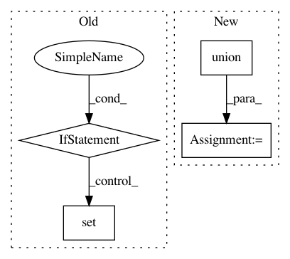

cf38c49c6260e2a7af3c1f752088532f0d76ab6d,torch_geometric/nn/conv/message_passing.py,MessagePassing,__init__,#MessagePassing#Any#Any#Any#,53
Before Change
self.__message_signature__ = inspect.signature(self.message)
// skip self, out
self.__update_signature__ = inspect.signature(self.update)
if set(update_special_args) - set(
self.__update_signature__.parameters
):
raise TypeError(
"Incomplete signature of update: {} are "
"missing required arguments".format(
(
set(update_special_args)
- set(self.__update_signature__.parameters)
)
)
)
self.__aggregate_signature__ = inspect.signature(self.aggregate)
if set(aggregate_special_args) - set(
self.__aggregate_signature__.parameters
):
raise TypeError(
"Incomplete signature of aggregate: {} are "
"missing required arguments".format(
set(aggregate_special_args)
- set(self.__aggregate_signature__.parameters)
)
)
After Change
aggr_args = set(self.__aggr_sign__.keys()) - aggr_special_args
update_args = set(self.__update_sign__.keys()) - update_special_args
self.__args__ = set().union(msg_args, aggr_args, update_args)
def __set_size__(self, size, index, tensor):
if size[index] is None:
size[index] = tensor.size(self.node_dim)
In pattern: SUPERPATTERN
Frequency: 3
Non-data size: 4
Instances
Project Name: rusty1s/pytorch_geometric
Commit Name: cf38c49c6260e2a7af3c1f752088532f0d76ab6d
Time: 2020-01-05
Author: matthias.fey@tu-dortmund.de
File Name: torch_geometric/nn/conv/message_passing.py
Class Name: MessagePassing
Method Name: __init__
Project Name: lovit/soynlp
Commit Name: b6ac99a937ad4d662fcb8b74d68dd02e4fceccfe
Time: 2018-11-05
Author: soy.lovit@gmail.com
File Name: soynlp/predicator/_predicator.py
Class Name: PredicatorExtractor
Method Name: __init__
Project Name: dit/dit
Commit Name: 146f5ddd1ac881fbebdeff83c0be0322bf7e1d74
Time: 2013-09-27
Author: chebee7i@gmail.com
File Name: dit/math/sigmaalgebra.py
Class Name:
Method Name: is_sigma_algebra__brute